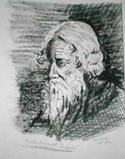

|
Personalities
Mohaguru and his
"Quest For Truth" : Compiled
By Avijit Roy
 |
"MohaGuru" Aroj Ali
Matubbar was a truly homegrown philosopher of
Bangladesh without any formal academic training-
he had not, in fact, attended any institution of
academic learning. Yet, after his death in 1985,
Aroj Ali Matubbar came to be regarded as one of
the most brilliant rationalists the country has
ever produced, and an iconoclast who was not
afraid to speak out against entrenched belief
and superstitions which easily lead to religious
fanaticism. Aroj Ali Matubbar's "Shotter
Shondhaney" (Quest for Truth) is a great
contribution to world's philosophy. .... (Read more)
|
Rabindranath
Thakur- A man of
arts and letters:
By W. Andrew
Robinson
|
 |
Rabindranath Thakur, the
celebrated Bengali poet, short-story writer,
song composer, playwright, essayist, and painter
who was awarded the Nobel Prize for Literature
in 1913. He introduced new prose and verse forms
and the use of colloquial language into Bengali
literature, thereby freeing it from traditional
models based on classical Sanskrit. He was
highly influential in introducing the best of
Indian culture to the West and vice .... (Read more)
|
 The Portrait
and Poem of a Poet - By Dr. A. H. Jaffor Ullah
The Portrait
and Poem of a Poet - By Dr. A. H. Jaffor Ullah
The Murray O’Hair
Family: Generations
in service to Atheism and the Separation of Church and
State... Forwarded
by Avijit Roy
|
For over three decades, Madalyn
Murray O’Hair and members of her family
labored on behalf of the cause of Atheism and
the separation of government and religion. As
Madalyn Murray, she was a plaintiff in the
historic MURRAY v. CURLETT case which helped to
end coercive prayer and Bible verse recitation
in the public schools of America... (Read
more) |
Dr Abraham T.
Kovoor The Rationalist of Indian Subcontinent : Forwarded
By Avijit Roy
 |
Dr Abraham. T. Kovoor was free
thinker, rationalist and psychiatrist, from
Kerala, South India who later spent his life in
Sri Lanka. He was the president of the
Rationalist Association of Sri Lanka where he
and Dr Carlo Fonseka held regular meetings at
Thurston College, Colombo. He came to the
conclusion that there was absolutely no
objective truth behind such claims. .... (Read more)
|
Dr Ahmed Sharif :
A tribute to a Bengali Free
thinker By Dr.
Nehal Karim
|
|
Dr. Ahmed Sharif, the prominent
figure of free thought country died just a year
back. The scholarly life of Dr. Ahmed Sharif, a
retired professor of Bengali literature of the
University of Dhaka, came to an end on his way
to hospital at 1.40 a.m. on February 24, 1999. A
massive heart attack brought the end to the life
which begun on February 13, 1921. He was a
consummate rational humanist who left behind a
legacy for those still fighting fascist ideas,
autocratic views, communalism and superstition. .. .... (Read more)
|
Comrade Ila Mitra:
A tribute By Dr.
Ajoy Roy
 |
Ila Mitra, the legendary peasant
leader of undivided Bengal, a veteran leader of
the communist movement in the sub-continent, a
dedicated friend to the cause of our war of
liberation in 1971, breathed her last in
Kolakata (Calcutta) on Sunday, 13th October
afternoon at PG hospital, Kolkata (Calcutta),
West Bengal. It was learnt from ETV-Calcutta TV
channel that following a severe heart attack
some time back she had been under treatment in
the PG hospital. .... (Read more)
|

|
A Rationalist Perspective on the
Tagore Debate....
A series of
debate on Tagore was spurred by
the NFB article of Mr. Abdullah on
May 10 that was cross posted in
Mukto-Mona. I would like to throw
in my own angle on the debate from
a rationalist perspective on the
points raised by Mr. Abdullah and
his critics as well. First I would
like to clarify a point made by
Mr. Abdullah in his NFB article of
May 20 also cross posted on Mukto-Mona
(The coin has two sides: two hands
make clapping!) on Satyen Bose and
Einstein,...... (Read
More) |
Rabindranath: A Misguided Genius
- Shahadat Hossain [
Part 1
Part 2 ]
Rabindranath Tagore -
An Alternative view :
by Shakil Sarwar
Rabindranath Tagore had always been portrayed larger
than his life. Hardly people tried or dared to criticize
him of his shortcomings. Those who tried to do so failed
to propound sufficient supportive arguments. I have
taken the trouble of crudely translating some excerpts I
collected over the last few years..... (Read
more)
Bangalee versus
Muslim: Criticizing Rabindranath : by
Zakaria S Khondker
|
|
In a typical village in
Bangladesh, if you surpass your neighbors and
relatives, you are in trouble. Neighbors and
relatives will try to humiliate you, pull you
down. As wealth, fame, recognition, honor all
are in relative terms. The psychology is if you
are down, they will be seen higher. . .... (Read more)
|
Myth-less
Personalities:
Gandhi - did he really
promote non-violence? by Nalinaksha
Bhattacharyya Gandhi's Ahimsa was
meant to defuse struggles by masses against the
imperialists. Never once did Gandhi ask the state to
be non-violent. All his sermons of non-violence were
reserved for the exploited masses when their anger
tended to coalescese into movements. Once in the 1930s
two platoons of Garhwal regiment were stationed in
Peshawar. They were asked to fire upon unarmed
demonstrators. They refused. They were court
martialled. Gandhi SUPPORTED THE ACTION OF THE
BRITISH GOVT. Let us also not forget that Gandhi
actively recruited for British war effort during the
First World War..... (Read
More)
The
Illusory Vs. The Real Mother Teresa
Here we represent two interesting articles for you
that claim that Mother Teresa, although praised by
Christians and other community, wasn't such a kind and
wonderful person as commonly assumed..... (Read
more)

A
protest from Mukto-mona on Teresa's Miracle (Bangla)
|